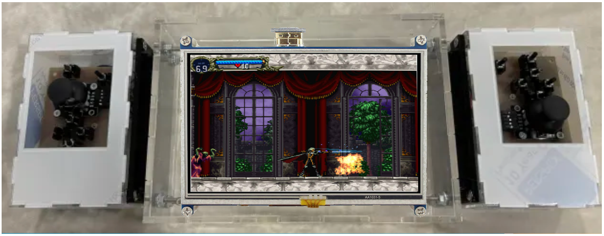

The Handheld Emulating Digital Console is portable emulation console that offers a variety of benefits for retro gaming enthusiasts. Here are some of the advantages associated with this type of device:
-
Portability:
The main benefit of this console is portability. It was designed to be small and light, so you can play whenever and wherever you want.
-
Game Fidelity:
Because of the use of FPGA technology, our console can emulate the original console's hardware via it's own hardware and not through software like the ones you can find on your phone or PC. -
Game Diversity:
The console can be home to many games of many different old-school consoles!
-
Connectivity and Modern Features:
Our console can be charged via USB-C, your everyday charging connector!
We have an external audio output via a 3.5mm Jack connector!
